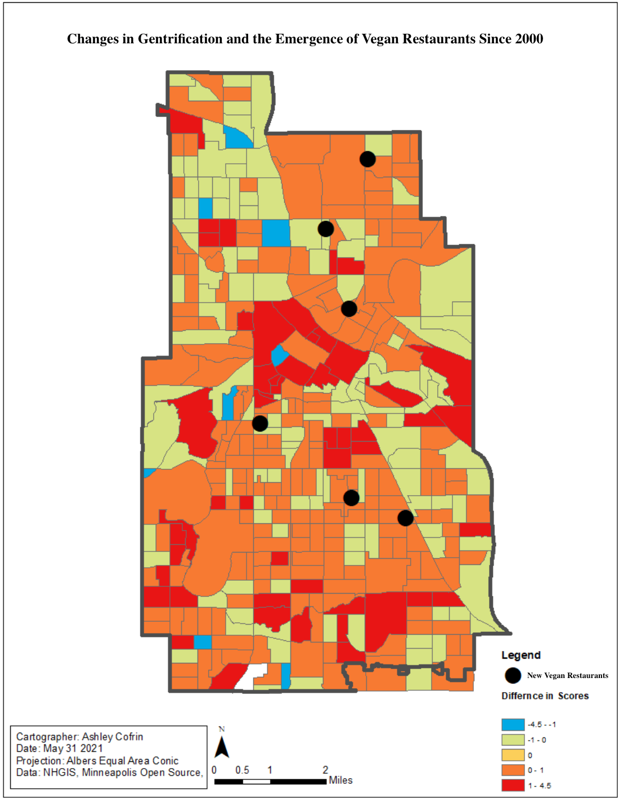

Ashley Cofrin. Spring, 2021
In the following visualizations, I use Minneapolis data from 2000, 2010, and 2018 to investigate trends between gentrified areas and the emergence of veganism in the city.
The Younger Dryas was a brief and abrupt climate event associated with a sudden cooling and drying in regions throughout the Northern Hemisphere; likely initiated by a weakening of the Atlantic meridional overturning circulation (AMOC). I analyze the effects of AMOC weakening and insolation seasonality on climate patterns in eastern North America using simulations of an Earth System Model. In addition to a forced weakening of the AMOC through a freshwater forcing in the North Atlantic, these simulations also include three experiments with obliquity and precession orbital parameters varied to minimize and maximize Northern Hemispheric insolation seasonality. While most of the hemisphere underwent cooling, eastern North America shows some signs of warming and increased precipitation following hosing. As Northern Hemisphere insolation seasonality is forced to increase temperature and precipitation seasonality decrease following hosing. Reduced temperature seasonality in eastern North America is a result of positive temperature anomalies in winter and a common cooling in summer across all orbital configuration experiments. Precipitation seasonality is reduced in all experiments from a common year-round wetting after hosing. These climate responses suggest that a weakening of the AMOC can ameliorate climate seasonality in some regions.
In recent years, vegan diets have been continuously portrayed as elitist and expensive; while also growing in popularity in primarily white privileged areas (Corsetti, 2018). Vegan food often comes at a higher price than other foods and is marketed towards a more middle class crowd, of whom have more advantages. With the previously calculated 'score of advantages', we can see if veganism rises in conjunction with gentrified areas. For this analysis, I defined vegan restaurants as ones that showed up in the app “Happy Cow''. I choose to do this due to its high accessibility for people looking for vegan restaurants along with its popularity as the most used app among people who eat vegan, suggesting its accuracy according to the community.
Figure 1: An anomaly graphic of Minneapolis “score of advantages” from 2018 to 2020. Warm colors indicate an increase in advantages over time, while cool colors indicate the opposite. This index score is referred to as “score of advantages” due to recent discussions considering that gentrification itself is hard to score and has many changing factors. The priincipal component analysis was calculated all years of data in Minneapolis using RStudio software. "New Restaurants" indicate restaurants that were present in 2018, and not 2000. This layer's point data was geocoded from 'Happy Cow', and year data was from each restraunts websities.
Figure 2: This figure displays the index scores in each year that there is census data from 2000 to the current day; along with points of what vegan restaurants are present that year, as georeferenced from “Happy Cow”. Classification of high and low are based on the natural breaks function.
The results show that vegan restaurants that appeared between 2000 and 2018 are in areas that have more measured 'advantages' now than they did in 2000; while every time they are on the cusp of an area that had slightly declined in their calculated advantages (Figure 1). None appeared in areas of ‘very’ increased advantages over the last 18 years. There is also a pattern of vegan restaurants surrounding the least advantaged area with nearly none in the middle; this least advantaged center slowly closes in over time (Figure 2). These patterns are indicative of vegan restaurants and gentrified areas moving spatially in similar ways although further research is required to understand the interaction between the two social phenomena. Veganism has many benefits on a personal and environmental scale; so while it may be spatially correlated to gentrification, it is not meant to be discouraged with these results. Future investigation should do community surveying to have a deeper understanding where a high density of people who eat vegan diets are, along with further research on defining gentrification.
Corsetti, Sophia. “The vegan movement is elitist.” The Massachusetts Daily Collegian, 2018, https://dailycollegian.com/2018/02/the-vegan-movement-is-elitist/.
Goetz, Edward G., et al. “The Diversity f Gentrification: Multiple Forms of Gentrification in Minneapolis and St. Paul.” (2019) http://gentrification.umn.edu/sites/gentrification.dl.umn.edu/files/media/diversity-of-gentrification-012519.pdf.
Happy Cow. https://www.happycow.net/.
Open Minneapolis. https://opendata.minneapolismn.gov/.
The National Historical Geographical Information System. https://www.nhgis.org/.